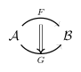
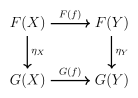
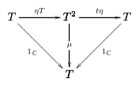
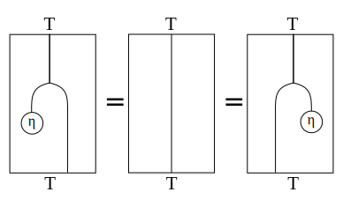

Monads Made Difficult
This is a short, fast and analogy-free introduction to Haskell monads derived from a categorical perspective. This assumes you are familiar with Haskell typeclasses and basic category theory.
If you aren’t already comfortable with monads in Haskell, please don’t read this. It will confuse your intution even more.
Categories
Suppose we have a abstract category \(\mathcal{C}\) with objects and morphisms.
- Objects : \(●\)
- Morphisms : \(● \rightarrow ●\)
For each object there is an identity morphism id and a composition rule \((\circ)\) for combining morphisms associatively. We can model this with the following type class in Haskell
class Category c where
id :: c x x
(.) :: c y z -> c x y -> c x zIn Haskell there is a category we call Hask over the constructor (->) of function types.
type Hask = (->)
instance Category Hask where
id x = x
(g . f) x = g (f x)The constructor (->) is sometimes confusing, for example the following are equivalent.
(->) ((->) a b) -> ((->) a c)
(a -> b) -> (a -> c)Functors
Between two categories we can construct a functor denoted \(T\) which maps between objects and morphisms of categories.
- Objects : \(T(●)\)
- Morphisms : \(T (● \rightarrow ●)\)
With the condition that \(T (f \circ g) = T (f) \circ T (g)\). In Haskell we model this with a multiparameter typeclass:
class (Category c, Category d) => Functor c d t where
fmap :: c a b -> d (t a) (t b)The identity functor \(1_\mathcal{C}\) for a category \(\mathcal{C}\) is a functor mapping all objects to themselves and all morphisms to themselves.
newtype Id a = Id a
instance Functor Hask Hask Id where
fmap f (Id a) = Id (f a)An endofunctor is a functor from a category to itself.
type Endofunctor c t = Functor c c tThe repeated image of a endofunctor over a category is written with exponential notation:
\[ \begin{align*} T^2 &= T T : \mathcal{C} \rightarrow \mathcal{C} \\ T^3 &= T T T: \mathcal{C} \rightarrow \mathcal{C} \end{align*} \]
newtype FComp g f x = C { unC :: g (f x) }
instance (Functor a b f, Functor c d g) => Functor a d (FComp f g) where
fmap f (C x) = C (fmap (fmap f) x)Natural Transformations
For two functors \(F,G\) between two categories \(\mathcal{A,B}\):
\[ F : \mathcal{A} \rightarrow \mathcal{B} \\ G : \mathcal{A} \rightarrow \mathcal{B} \]
We can construct a natural transformation \(\eta\) which is a mapping between functors \(\eta : F \rightarrow G\) that associates every object \(X\) in \(\mathcal{A}\) to a morphism in \(\mathcal{B}\):
\[ \eta_X : F(X) \rightarrow G(X) \]
Show diagrammaticlly as:

Such that the following naturality condition holds for any moprhism \(f : X \rightarrow Y\):
\[ \eta_Y \circ F(f) = G(f) \circ \eta_X \]

This is expressible in our general category class as the following existential type:
type Nat c f g = forall a. c (f a) (g a)In the case of Hask we a family of polymorphic functions with signature: forall a. f a -> g a. The canoical example is the natural transformation between the the List functor and the Maybe functor ( where f = List, g = Maybe ).
safeHead :: forall a. [a] -> Maybe a
safeHead [] = Nothing
safeHead (x:xs) = Just xEither way we chase the diagram we end up at the same place.
fmap f (safeHead xs) ≡ safeHead (fmap g xs)Run through each of the cases if you need to convince yourself of this fact.
fmap f (safeHead [])
= fmap f Nothing
= Nothing
safeHead (fmap f [])
= safeHead []
= Nothing
fmap f (safeHead (x:xs))
= fmap f x
= f x
safeHead (fmap f (x:xs))
= safeHead [f x]
= f xMonads
We can finally define a monad over a category \(\mathcal{C}\) to be a triple \((T, \eta, \mu)\) of:
- An endofunctor \(T: \mathcal{C} \rightarrow \mathcal{C}\)
- A natural transformation \(\eta : 1_\mathcal{C} \rightarrow T\)
- A natural transformation \(\mu : T^2 \rightarrow T\)
class Endofunctor c t => Monad c t where
eta :: c a (t a)
mu :: c (t (t a)) (t a)With an associativity square:
\[ \mu \circ T \mu = \mu \circ \mu T \\ \]

And a triangle equality:
\[ \mu \circ T \eta = \mu \circ \eta T = 1_T \\ \]

Alternatively we can express our triple as a series of string diagrams in which we invert the traditional commutative diagram of lines as morphism and objects as points andand draw morphisms as points and objects as lines. In this form the monad laws have a nice geometric symmetry.

With the coherence conditions given diagrammatically:


Bind/Return Formulation
There is an equivalent formulations of monads in terms of two functions ((>>=), return) which can be written in terms of mu, eta)
In Haskell we define a bind (>>=) operator defined in terms of the natural transformations and fmap of the underlying functor. The join and return functions can be defined in terms of mu and eta.
(>>=) :: (Monad c t) => c a (t b) -> c (t a) (t b)
(>>=) f = mu . fmap f
return = etaIn this form equivalent naturality conditions for the monad’s natural transformations give rise to the regular monad laws by substitution with our new definitions.
fmap f . return ≡ return . f
fmap f . join ≡ join . fmap (fmap f)And the equivalent coherence conditions expressed in terms of bind and return are the well known Monad laws:
return a >>= f ≡ f a
m >>= return ≡ m
(m >>= f) >>= g ≡ m >>= (\x -> f x >>= g)Haskell defines the following do-notation sugar for the bind operator:
do { a < - f ; m } ≡ f >>= \a -> m
do { ... ; a } ≡ return aSo the follow are equivalent:
do {
a <- f ;
b <- g ;
c <- h ;
return (a, b, c)
}
(f >>= (\a ->
(g >>= (\b ->
(h >>= (\c ->
return (a, b, c)
))
))
))In this form the laws can equivalently be written as block expressions:
m :: t a
f :: a -> t b
g :: b -> t cdo y <- return x
f y
≡ do f xdo x <- m
return x
≡ do m do b <- do a <- m
f a
g b
≡ do a <- m
b <- f a
g b
≡ do a <- m
do b <- f a
g bKleisli Category
The final result is given a monad we can form a new category called the Kleisli category from the monad. The objects are embedded in our original c category, but our arrows are now Kleisli arrows a -> T b. Given this class of “actions” we’d like to write an operator which combined these morphisms: (b -> T c) -> (a -> T b) -> (a -> T c) just like we combine functions ( b -> c ) -> ( a -> b ) -> ( a - > c) in our host category.
In turns we out can, for a specific operator (<=<) over Kleisli arrows which is precisely morphism composition for Kleisli category. The Kleisli category embodies “composition of actions” that forms a very general model of computation.
The mapping between a Kleisli category formed from a category \(\mathcal{C}\) is that:
- Objects in the Kleisli category are objects from the underlying category.
- Morphisms are Kleisli arrows of the form : \(f : A \rightarrow T B\)
- Identity morphisms in the Kleisli category are precisely \(\eta\) in the underlying category.
- Composition of morphisms \(f \circ g\) in terms of the host category is defined by the mapping:
\[ f \circ g = \mu ( T f ) g \]
Simply put, the monad laws are the equivalent category laws for the Kleisli category.
(<=<) :: (Monad c t) => c y (t z) -> c x (t y) -> c x (t z)
f <=< g = mu . fmap f . g
newtype Kleisli c t a b = Kleisli (c a (t b))
instance Monad c t => Category (Kleisli c t) where
-- id :: (Monad c t) => c a (t a)
id = Kleisli eta
-- (.) :: (Monad c t) => c y (t z) -> c x (t y) -> c x (t z)
(Kleisli f) . (Kleisli g) = Kleisli ( f <=< g )In the case of Hask where c = (->) then we indeed see the instance give rise to the Monad and Functor instances similar to the Prelude ( if the Prelude had the proper Functor/Monad hierarchy! ).
class Functor t where
fmap :: (a -> b) -> t a -> t b
class Functor t => Monad t where
eta :: a -> (t a)
mu :: t (t a) -> (t a)
(>>=) :: Monad t => t a -> (a -> t b) -> t b
ma >>= f = join . fmap fHaskell Monads
For instance the List monad would have have:
- \(\eta\) returns a singleton list from a single element.
- \(\mu\) turns a nested list into a flat list.
- \(\mathtt{fmap}\) applies a function over the elements of a list.
instance Functor [] where
fmap f (x:xs) = f x : fmap f xs
instance Monad [] where
-- eta :: a -> [a]
eta x = [x]
-- mu :: [[a]] -> [a]
mu = concatThe IO monad would intuitively have the implementation:
- \(\eta\) returns a pure value to a value within the context of the computation.
- \(\mu\) turns a sequence of IO operation into a single IO operation.
- \(\mathtt{fmap}\) applies a function over the result of the computation.